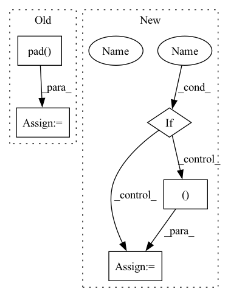

Pattern ID :25448
Before Change
hidden_states = self.layer_norm(hidden_states)
hidden_states = self.dropout(hidden_states)
hidden_states = F.pad(
hidden_states,
// Want e.g. (..., 999, 768) -> (..., 1000, 768)
pad=(0, 0, 0, pad_length),
)
for layer in self.layers:
layer_outputs = layer(After Change
if skip_the_layer:
layer_outputs = (None, None)
if output_attentions :
all_self_attentions = all_self_attentions + (layer_outputs[1]In pattern: SUPERPATTERN
Frequency: 3
Non-data size: 5
Instances Fragment ID: 77668897
Project Name: huggingface/optimum-graphcore
Commit Name: 075200de7b5b118681fc46af97985bb53ce9c146
Time: 2022-08-03
Author: gejinchen1996@gmail.com
File Name: optimum/graphcore/models/wav2vec2/ipu_layer_drop.py
M Class Name: IPUWav2Vec2Encoder
N Class Name: IPUWav2Vec2Encoder
M Method Name: forward(6)
N Method Name: forward(6)
M Parent Class: Wav2Vec2Encoder
N Parent Class: Wav2Vec2Encoder
M File Name: optimum/graphcore/models/wav2vec2/ipu_layer_drop.py
N File Name: optimum/graphcore/models/wav2vec2/ipu_layer_drop.py
M Start Line: 41
M End Line: 108
N Start Line: 41
N End Line: 83
Before Change
hidden_states = hidden_states + position_embeddings
hidden_states = self.dropout(hidden_states)
hidden_states = F.pad(
hidden_states,
// Want e.g. (..., 999, 768) -> (..., 1000, 768)
pad=(0, 0, 0, pad_length),
)
for layer in self.layers:
layer_outputs = layer(After Change
hidden_states = self.layer_norm(hidden_states)
if output_hidden_states :
all_hidden_states = all_hidden_states + (hidden_states Fragment ID: 77668899
Project Name: huggingface/optimum-graphcore
Commit Name: 075200de7b5b118681fc46af97985bb53ce9c146
Time: 2022-08-03
Author: gejinchen1996@gmail.com
File Name: optimum/graphcore/models/wav2vec2/ipu_layer_drop.py
M Class Name: IPUWav2Vec2EncoderStableLayerNorm
N Class Name: IPUWav2Vec2EncoderStableLayerNorm
M Method Name: forward(6)
N Method Name: forward(6)
M Parent Class: Wav2Vec2EncoderStableLayerNorm
N Parent Class: Wav2Vec2EncoderStableLayerNorm
M File Name: optimum/graphcore/models/wav2vec2/ipu_layer_drop.py
N File Name: optimum/graphcore/models/wav2vec2/ipu_layer_drop.py
M Start Line: 127
M End Line: 193
N Start Line: 101
N End Line: 144
Before Change
(vert_pad, vert_residual - vert_pad),
(hor_pad, hor_residual - hor_pad),
)
img = np.pad(
img,
padding,
constant_values=0,
)
return img
def encode_image(self, img: Union[Image.Image, np.ndarray]) -> np.array:
After Change
// CLIP uses PIL, so we do too to match its results. But if you don"t
// want to have PIL as a dependency, feel free to change the code to
// use the other branch.
use_pil_for_resizing = True
if use_pil_for_resizing :
// https://github.com/pytorch/vision/blob/7cf0f4cc1801ff1892007c7a11f7c35d8dfb7fd0/torchvision/transforms/functional_pil.py//L240
img_pil = Image.fromarray(img)
img_pil = img_pil.resize(
(resized_w, resized_h ), resample=Image.BICUBIC
)
img = np.array(img_pil)
else:
img = cv.resize(
img, (resized_w, resized_h), interpolation=cv.INTER_CUBIC Fragment ID: 77668868
Project Name: lakeraai/onnx_clip
Commit Name: edb198d8b14891cd88132a1072c01d74e477b6a2
Time: 2023-01-31
Author: vv@lakera.ai
File Name: onnx_clip/preprocessor.py
M Class Name: Preprocessor
N Class Name: Preprocessor
M Method Name: _smart_resize(2)
N Method Name: _smart_resize(2)
M Parent Class:
N Parent Class:
M File Name: onnx_clip/preprocessor.py
N File Name: onnx_clip/preprocessor.py
M Start Line: 33
M End Line: 77
N Start Line: 44
N End Line: 81